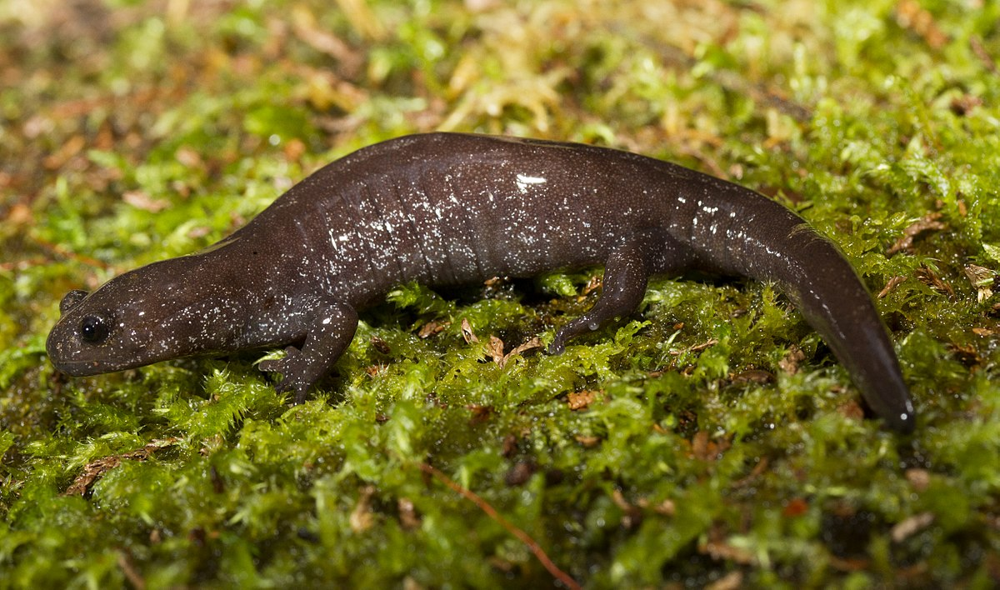

台 灣 山 椒 魚 圖 鑑
山椒魚簡介&分布
台灣山椒魚處境(待辦)
蠑螈V.S.山椒魚(待辦)
參考資料(待辦)

觀霧山椒魚 Hynobius fuca Lai and Lue
科名：
小鯢科（Hynobiidae）
最大體長：
10cm
瀕危狀態：
瀕臨絕種野生動物
形態特徵：
深褐色，體測有許多白斑，後肢多為四趾。幼體：乳白色，具外鰓；隨成長顏色加深。
棲所生態：
棲息於高海拔針葉林或闊葉林底層、溪流附近。卵為膠質卵囊一對。以小型無脊椎為食。侷限性分布在中高海拔地區的原始森林中。